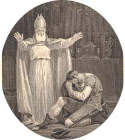
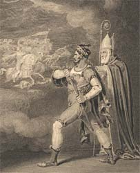

|
|
Home | Corson
Collection | Biography | Works | Image
Collection | Recent
Publications | Portraits | Correspondence | Forthcoming
Events | Links | E-Texts | Contact
The Vision of Don Roderick
First Edition, First Impression:
The Vision of Don Roderick; A Poem. By Walter Scott, Esq.
Edinburgh: Printed by James Ballantyne and Co. For John Ballantyne
and Co., Edinburgh; and Longman, Hurst, Rees, Orme, and Brown,
London. 1811.
Composition | Synopsis | Reception | Links
Composition
The Vision of Don Roderick was written
in celebration of Wellington's successes in the Peninsular
Campaign, with all profits to be donated to Portuguese
war sufferers. Composed in Spenserian stanzas, the poem
was based on an episode in Ginés Pérez de
Hita's Guerras civiles de Granada, one of Scott's
favourite books as a boy. He began work on the poem at Ashestiel during
the spring vacation of 1811 but found composition extremely
hard-going. Upon completing the poem, he dismissed it in
his correspondence as 'this patriotic puppet' (letter to
John Morrit, 1 July 1811) and a mere 'Drum and Trumpet
performance' (letter to William Hayley, 2 July 1811).
Back to top
|
 |
Synopsis
Scott derived his poem's scheme from an episode in the Spanish
historian Ginés Pérez de Hita's Guerras civiles
de Granada (1595-1609), in which Don Roderick, the last Gothic
King of Spain, is portrayed descending into an enchanted cave to
learn the outcome of the Moorish invasion. Scott has two bronze
giants reveal further visions of Spain's future: the Moorish dominion
following Don Roderick's death, the restoration of Christian rule,
the conquest of the New World, religious persecution, the slow
decline of the increasingly corrupt Spanish court, down to the
present day with Napoleon's invasion, the resistance of the Spanish
patriots, and, finally, Wellington's brilliant victories.
Back to top
Reception
Published on July 2, 1811, The Vision of Don Roderick was,
in spite of Scott's own negative assessment, well-received
by the public and earned one hundred guineas for the Portuguese
war fund. Critical reaction was more mixed. The vividness
of its descriptions were widely praised though the Quarterly
Review queried the propriety of mixing historical and
allegorical figures and regretted that it lacked all suspense.
Francis Jeffrey, writing in the Edinburgh Review similarly
decried the absence of all story and characters but nonetheless
admired the brilliance of Scott's tableaux. The Critical
Review pointedly refrained from passing judgment given
the poem's charitable purpose while the Eclectic Review regretted
Scott's idolatry of Wellington and accused him of celebrating
war and barbarity.
Back to top
|
 |
Links
Back to top
Back to Index of Works
Last updated: 19-Dec-2011
© Edinburgh University Library
|
|